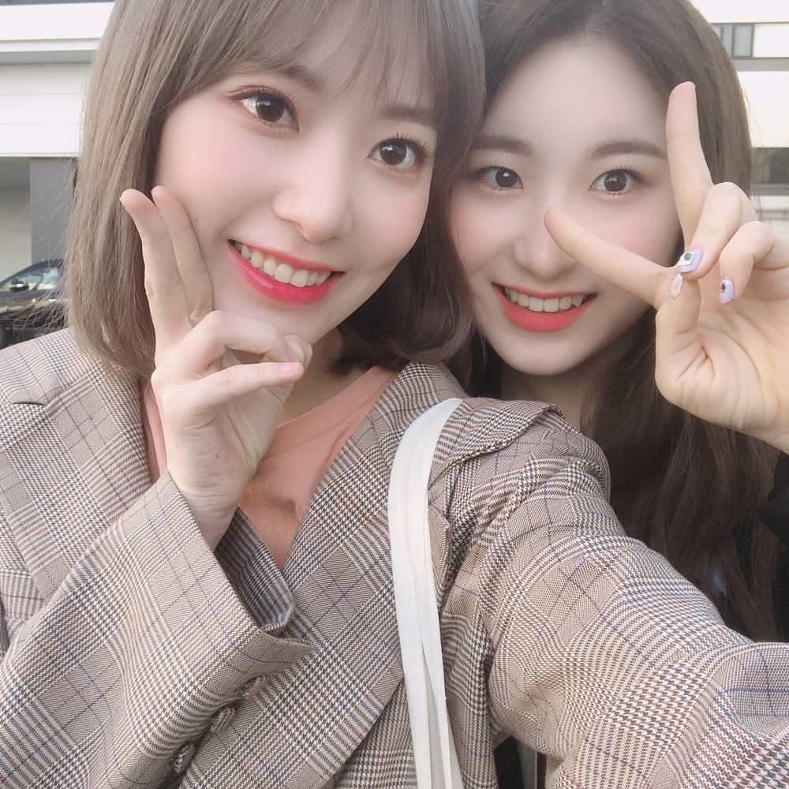
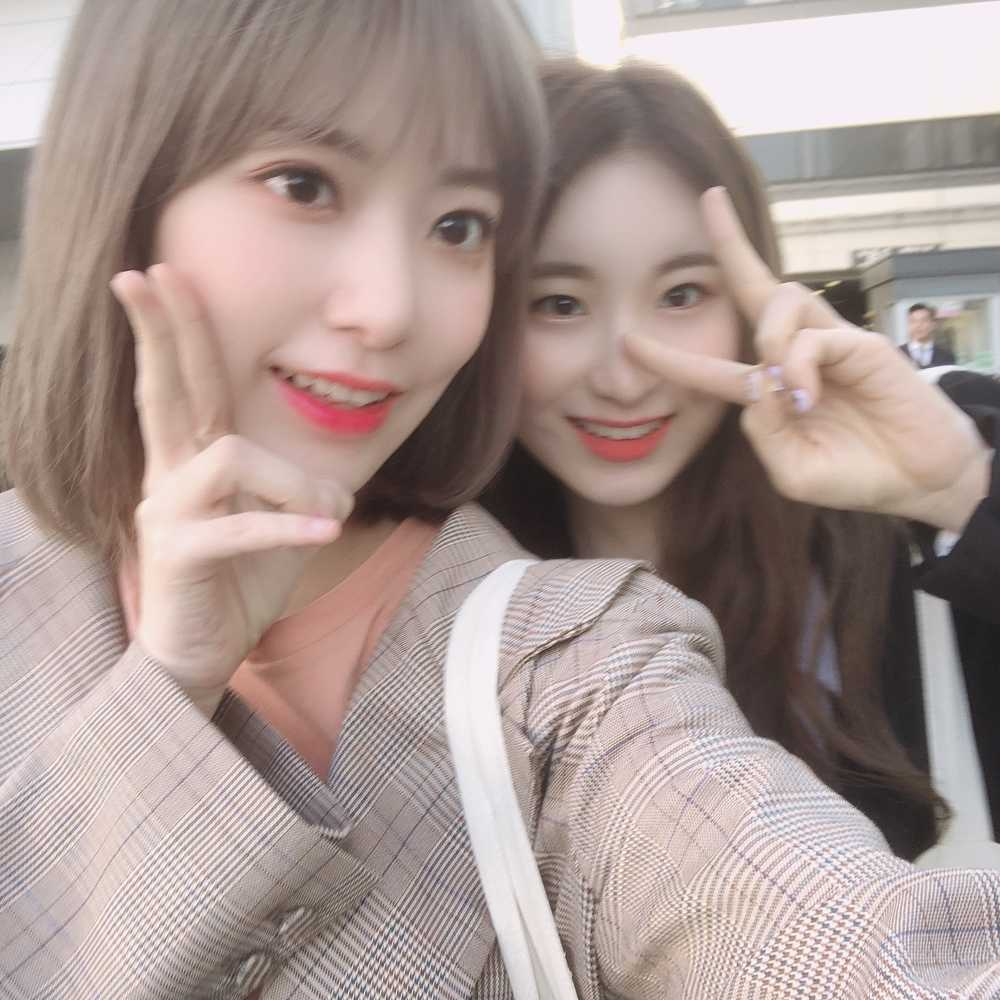

今回の髪色はね～～
ことりベージュっていうんだよ～～！
知ってる人もいるかも！
日本で出来たカラーの名前だから。
アニメ ラブライブのことりちゃんが、ベージュのような？金のような？カラーなんだけど、それが本当に可愛くて、一時期真似してことりベージュっていう名前が流行ったんだよ～
韓国でも、ことりベージュって名前でそのまま同じ色のカラーがあるらしくて！！！
今回は、その色！でもこの色が難しいんだなぁ～～
カラー、二、三回してやっと色が出たと思ったら、すぐ色が落ちて金になっちゃうの～～
難しい難しい😔
でも、私ラブライブ ことりちゃん推しで、ずーっと前にことりベージュしたいってSNSで言ったこともあるくらい！
だから、嬉しい😊
今日、また髪染めたてだから
ことりベージュかな？
染めたてだと色強めだから
もうちょい色落ちたらことりちゃんかな☺️
美容室のお姉さんに、おーさとりさとり！ （ことり＋さくらで、さとり）って言われるの面白くてすき😂💕

